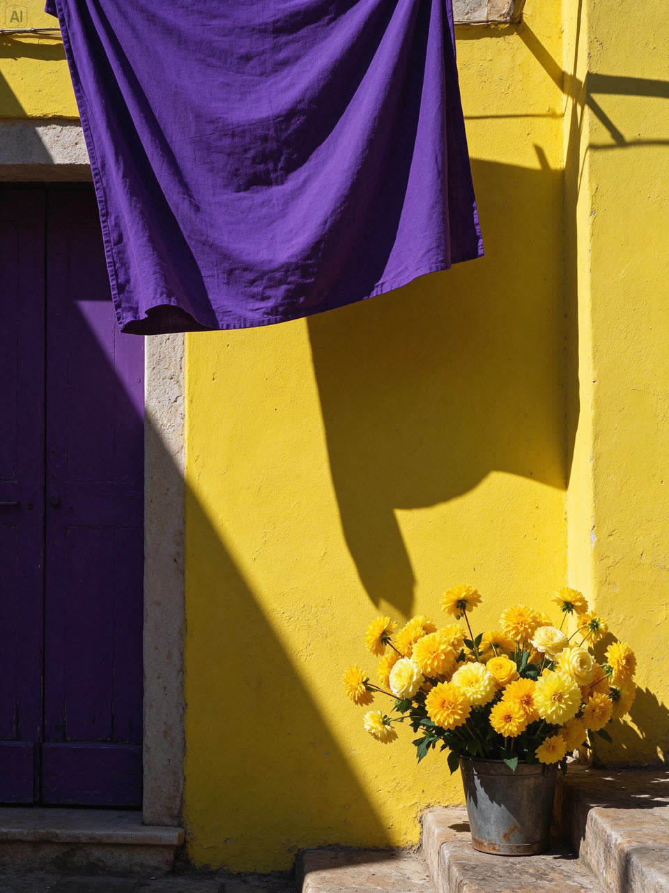

Seedream 5.5 official: southern European corner styled in complementary purple and yellow, limewash wall, purple door, linen, a bucket of golden flowers
PRP-072Prop stylingSeedream 5.5 (ByteDance Seed; official model-page example)by ByteDance Seed (official Seedream 5.5 model page)2026-11-09

Set dressing written as a colour-blocking brief. Each element is a coloured plane: a lemon-yellow limewashed wall, an old deep-purple wooden door and hanging royal-purple linen ("form a bold geometric composition"), with one prop accent placed in the frame ("Golden flowers fill a weathered metal bucket at the lower right"). Hard afternoon sun is there to show the materials ("textured plaster, fabric folds, rust and layered petals"). A transferable formula for location and prop styling in a complementary palette.
Prompt
A vertical 3:4 street photograph of a southern European corner. A lemon-yellow limewashed wall, an old deep-purple wooden door and hanging royal-purple linen form a bold geometric composition. Golden flowers fill a weathered metal bucket at the lower right. Strong afternoon sunlight casts crisp shadows, revealing textured plaster, fabric folds, rust and layered petals in vivid complementary purple and yellow.
Our Seedance 2.5 adaptation
[ADAPTED for Seedance 2.5 by Grok Bot; not the creator's prompt. Follows the official BytePlus Seedance 2.5 prompt guide and its official sd25-pe prompt-optimizer skill: parameters only on the API line (not in the prompt body), subject + action + scene, then visuals, camera (move, subject, start, direction, arrival) and sound; only the source's own exclusions are kept.] API: duration 6, ratio 3:4, resolution 1080p, generate_audio true. 【Scene】A southern European street corner: a lemon-yellow limewashed wall, an old deep-purple wooden door and hanging royal-purple linen forming a bold geometric composition; golden flowers fill a weathered metal bucket at the lower right. 【Action】A light breeze moves the linen and the flower heads; the shadow edge from the eaves shifts slightly across the plaster. 【Camera】Locked-off frontal composition, a very slow push-in of a few centimetres toward the bucket. 【Visuals】Strong afternoon sunlight with crisp shadows revealing textured plaster, fabric folds, rust and layered petals; vivid complementary purple and yellow. 【Sound】Breeze, linen flapping softly, a distant street.
Tags: set dressing, colour blocking, complementary purple/yellow, limewash, weathered bucket, flowers, hard afternoon sun, material texture, 3:4, Seedream 5.5